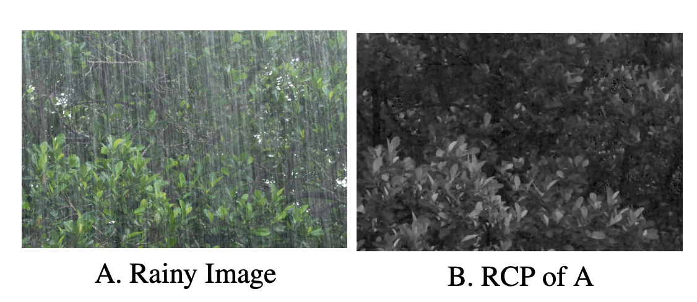
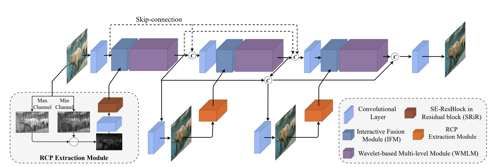
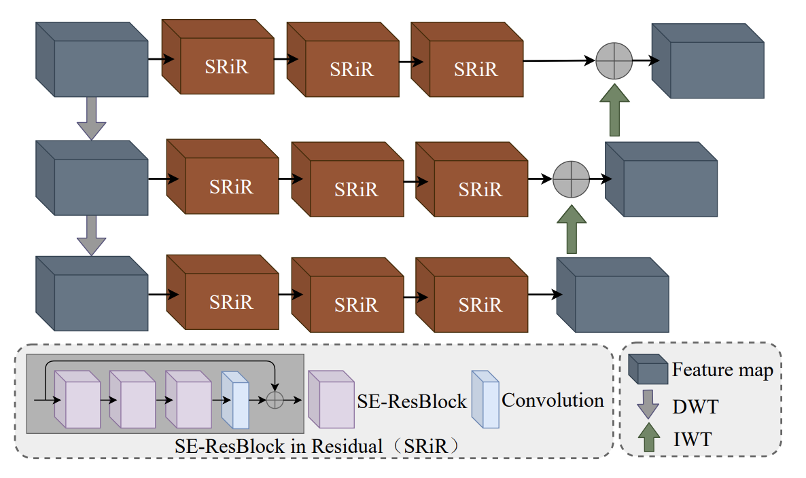
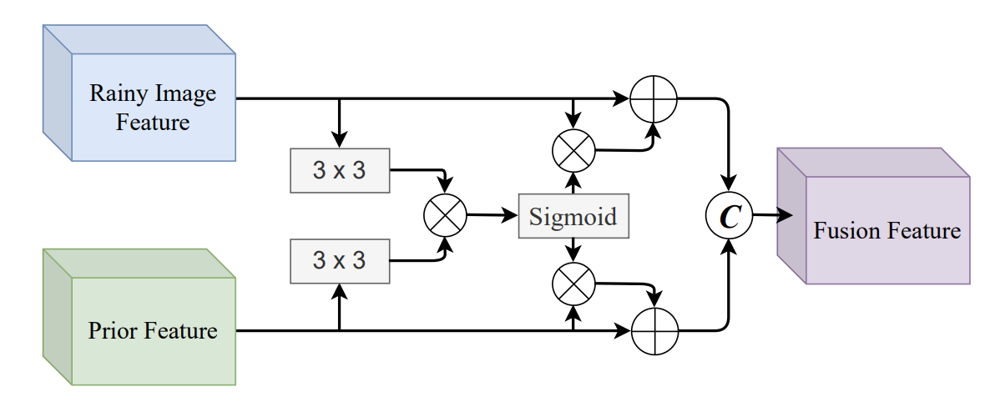
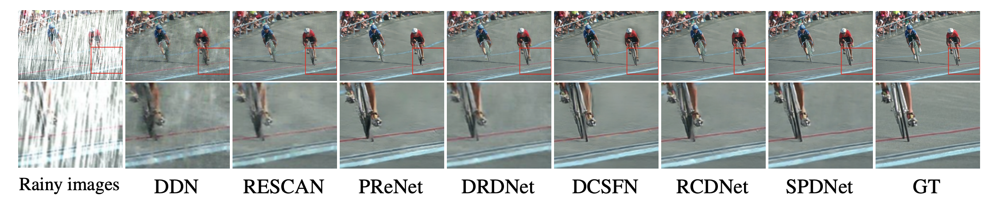
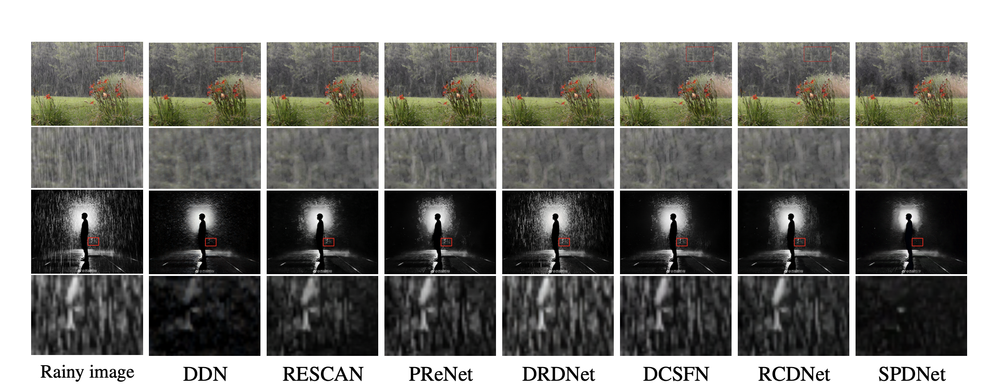
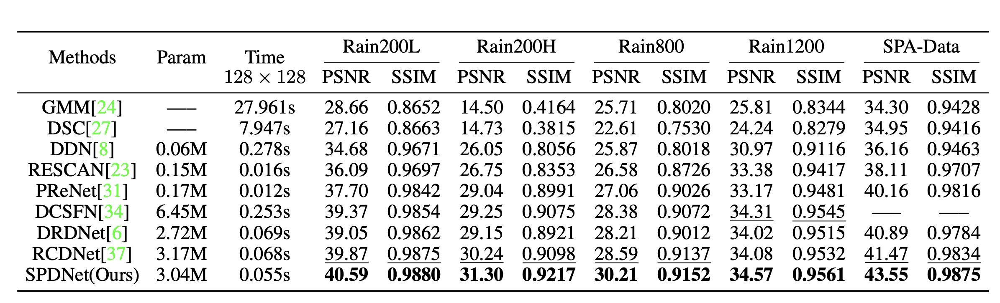
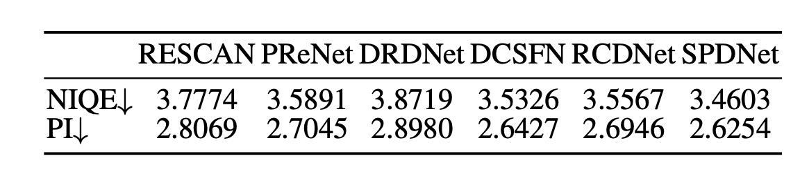
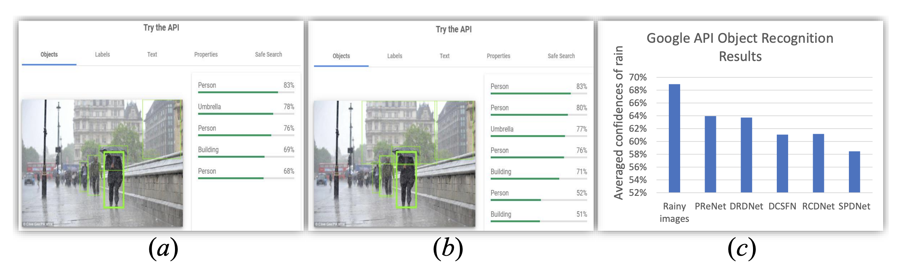

Structure-Preserving Deraining with Residue Channel Prior GuidanceQiaosi Yi1 Juncheng Li1,2 Qinyan Dai1 Faming Fang1 Guixu Zhang1 Tieyong Zeng21 East China Normal University 2 The Chinese University of Hong KongContact us: qiaosiyijoyies@gmail.com, cvjunchengli@gmail.con |
Abstract
Single image deraining is important for many high-level computer vision tasks since the rain streaks can severely degrade the visibility of images, thereby affecting the recognition and analysis of the image. Recently, many CNN-based methods have been proposed for rain removal. Although these methods can remove part of the rain streaks, it is difficult for them to adapt to real-world scenarios and restore high-quality rain-free images with clear and accurate structures. To solve this problem, we propose a StructurePreserving Deraining Network (SPDNet) with RCP guidance. SPDNet directly generates high-quality rain-free images with clear and accurate structures under the guidance of RCP but does not rely on any rain-generating assumptions. Specifically, we found that the RCP of images contains more accurate structural information than rainy images. Therefore, we introduced it to our deraining network to protect structure information of the rain-free image. Meanwhile, a Wavelet-based Multi-Level Module (WMLM) is proposed as the backbone for learning the background information of rainy images and an Interactive Fusion Module (IFM) is designed to make full use of RCP information. In addition, an iterative guidance strategy is proposed to gradually improve the accuracy of RCP, refining the result in a progressive path. Extensive experimental results on both synthetic and real-world datasets demonstrate that the proposed model achieves new state-of-the-art results.
Motivation
|  |
Recently, convolutional neural networks (CNN) have achieved significant success in many computer vision tasks. However, (1). most methods predict rain streaks via the built CNN model and then subtract rain streaks from rainy images to get the final output; (2). these methods focus on learning the structure of rain streaks, but they pay less attention to learning the structure of objects and ignore the importance of image prior; (3). residue channel prior (RCP) show clear structures even extracted from the rainy image.
SPDNet
|  |
WMLM
|  |
IFM
|  |
Visual Results
|  |
|  |
PSNR/SSIM Results
|  |
NIQE/PI Results
|  |
Application Results
|  |
Downloads
| Paper | : [ ICCV_SPDNet.pdf ] |
| Experimental results | : [ SPDNet_Results.zip ] |
| Pre-trained model | : [ ICCV2021_SPDNet_premodel.zip ] |
| Source Code. | : [ Code ] |
BibTex